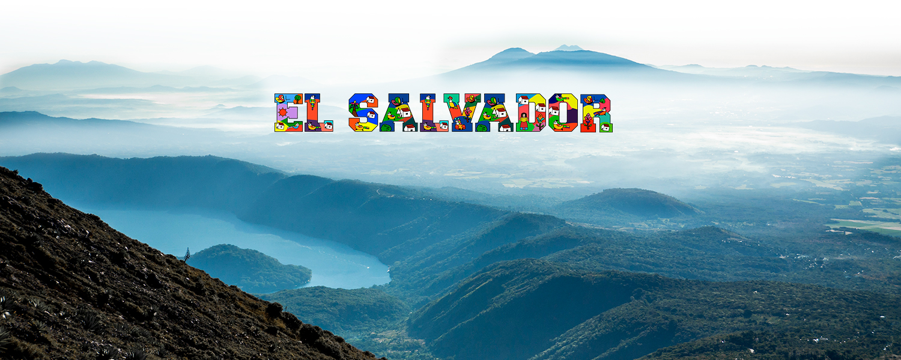
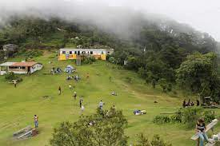

Lugares Turisticos con
EL SALVADOR


El Salvador
Es uno de los países más pequeños del continente, pero eso no le impide que sus lugares turísticos sean enormes en belleza natural. Está rodeado de imponentes volcanes, montañas, lagos y playas con olas para surfear. Además, posee algunas de las zonas arqueológicas más importantes del continente, llenas de historia y cultura prehispánica. Y si de gastronomía se trata, este país ofrece sabores que dejaran un recuerdo imborrable en las personas que lo visiten. Llamado popularmente el Pulgarcito de América, por su reducida extensión territorial, El Salvador es un destino que muchos viajeros tienden a pasar por alto, pero la verdad es que tiene mucho que ofrecer.

10 Mejores Lugares Turisticos de El Salvador
1. San Salvador
Si se trata de hacer turismo en El Salvador, la ciudad capital, es una parada obligatoria. Aquí podrás encontrar la mejor oferta de paquetes turísticos en El Salvador, la mayor oferta hotelera, varios centros comerciales, restaurantes y museos. Entre los lugares de San Salvador que puedes visitar destacan el Palacio Nacional, la Plaza Gerardo Barrios, la Catedral Metropolitana, El Museo de Arte, uno de los más importantes del país y la Plaza Futura que ofrece un ambiente activo por la noche con sus terrazas y cafés.

2. Lago de Coatepeque (Departamento de Santa Ana)
Ubicado en Santa Ana, a 18 kilómetros al sur de la capital del departamento y a 61 kilómetros de San Salvador, está el Lago Coatepeque, uno de los mejores destinos turísticos del Salvador. Este lago fue el cráter de un volcán por lo que cuenta con zonas de aguas termales donde se puede disfrutar del contraste de temperaturas entre la superficie caliente y el fondo con aguas heladas. .Desde la orilla parten paseos en lanchas para recorrer las islas cercanas. Asimismo, desde el mirador del Parque Nacional de Los Volcanes, podrás apreciar una vista panorámica del lago y su agua turquesa.

3. Tazumal (Departamento de Santa Ana)
Tazumal es el nombre de un antiguo asentamiento maya con la pirámide más grande de El Salvador. La zona arqueológica, ubicada en Chalchuapa, a 80 kilómetros de San Salvador, es uno de los sitios naturales de El Salvador más importantes. Con 25 metros de altura, el complejo hecho de piedra y barro data del siglo IX y fue construido por los mayas a imagen y semejanza de los volcanes que rodeaban el territorio. Aquí podrás sentarte en el césped, tomar fotografías y apreciar una verdadera joya de la cultura prehispánica. Además, cuenta con un museo para toda la familia, donde se explica la historia y cultura de los pueblos nativos de El Salvador

4. Volcán de Izalco (Departamento de Sonsonate)
Localizado en el Parque Nacional de los Volcanes, en el departamento de Sonsonate, el Volcán de Izalco es uno de los atractivos naturales del Salvador más populares. El volcán también es conocido por el sobrenombre del “Faro del Pacífico” porque cuando entró en erupción estuvo unos 80 años expulsando cenizas, las cuales podían ser vistas por navegantes de los barcos que transitaban por la zona. Cuenta con un sendero muy seguro por el que puede subirse hasta la cima, el recorrido demora menos de 2 horas. Además, una vez que llegues a la cumbre se puede apreciar una increíble vista del Océano Pacífico.

5. Suchitoto (Departamento de Cuscatlán)
La ciudad de Suchitoto se ubica a 47 kilómetros de San Salvador, en el departamento de Cuscatlán. Si planeas unas vacaciones en El Salvador, debes recorrer las pintorescas calles empedradas y con coloridas fachadas. En Suchitoto podrás disfrutar de festivales de arte, teatro y cine, de iglesias y plazas. También se encuentra uno de las principales atracciones naturales del país, el Lago de Suchitlán. Podrás visitar varios mercados con ventas de artesanías típicas, restaurantes que ofrecen platos típicos como las pupusas o las canoas de plátano

6. Cerro Verde (Departamento de Santa Ana)
El Cerro Verde, ubicado a 19 kilómetros de San Salvador en la cordillera de Apaneca, es un volcán inactivo y la montaña principal dentro del Parque Nacional de Los Volcanes. Aquí podrás recorrer senderos rodeados de vegetación tropical y varios miradores que ofrecen increíbles vistas panorámicas del Lago Coatepeque. Hay varios tours en el Salvador que parten desde el centro y ofrecen visitas guiadas con transporte incluido hasta el parque para hacer un recorrido por los volcanes Santa Ana, Izalco y San Salvador. Así que no dejes de visitar uno de los lugares más bonitos del Salvador.

7. El Pital (Departamento de Chalatenango)
Viajar por El Salvador implica conocer increíbles espacios naturales y El Pital es el lugar perfecto para los amantes de los espacios abiertos. Está ubicado en plena zona fronteriza con Honduras, en Chalatenango, y desde San Salvador deben recorrerse unos 90 kilómetros. A diferencia del clima cálido que caracteriza a la mayoría de las zonas del país, en El Pital pueden alcanzarse los 3° centígrados. Además podrás realizar paseos por el bosque, alquilar tiendas para acampar con toda la familia y hacer fogatas, también hay varios restaurantes cercanos que ofrecen bebidas calientes en uno de los sitios naturales de El Salvador.

8. Ruta de las Flores (Departamento de Sonsonate)
Es un paseo que involucra 6 ciudades y los mejores destinos turísticos en El Salvador. La travesía comprende las ciudades de Nahuizalco, Salcoatitán, Juayua, Apaneca, Ataco y Ahuachapan, ubicadas en los departamentos de Sonsonate y Auchapán. En la ruta pueden conocerse poblaciones indígenas, galerías de arte, cascadas, espacios para practicar turismo de aventura y varias iglesias, por lo que se convierte en uno de los atractivos turísticos en El Salvador que no te puedes perder. Y si te preguntas dónde comer en El Salvador, en este viaje podrás degustar los mejores platos típicos. La oferta de hospedaje es variada en cada localidad y como es un país pequeño el recorrido puede hacerse en 3 días.

9. Playa Costa del Sol (Departamento de La Paz)
Playa Costa del Sol es considerada por muchos la mejor playa de la costa salvadoreña. Está ubicada en la costa de La Libertad, a 60 kilómetros de San Salvador. La arena de la playa es suave y de una tonalidad grisácea, mientras que las aguas, tienen un oleaje algo fuerte y el azul del Océano Pacífico. Si estas buscando lugares para salir con niños en El Salvador visita playa Costa del Sol, este balneario de ambiente familiar te ofrece varios puestos que venden mariscos frescos y agua de coco, también flotadores y pelotas para los más pequeños. Como forma parte del complejo turístico más grande del país, ofrece la mayor variedad en oferta de hoteles y resorts

10. Puerta del Diablo (Departamento de San Salvador)
La encuentras en Panchimalco, a sólo 13,4 kilómetros de San Salvador, se encuentra la formación rocosa Puerta del Diablo, uno de los mejores lugares para visitar en El Salvador. Desde aquí pueden apreciarse increíbles vistas de la capital, el Volcán San Vicente y el Océano Pacífico, lo que la convierte en un lugar ideal para pasar las vacaciones. Aquí podrás hacer rapel o tirolina y si prefieres caminar, hay un sendero señalizado. La particularidad de la Puerta del Diablo es la grieta que divide a la montaña en dos partes, donde la leyenda local cuenta que en este lugar el diablo abrió una grieta para escapar de los padres de una joven que cortejaba.